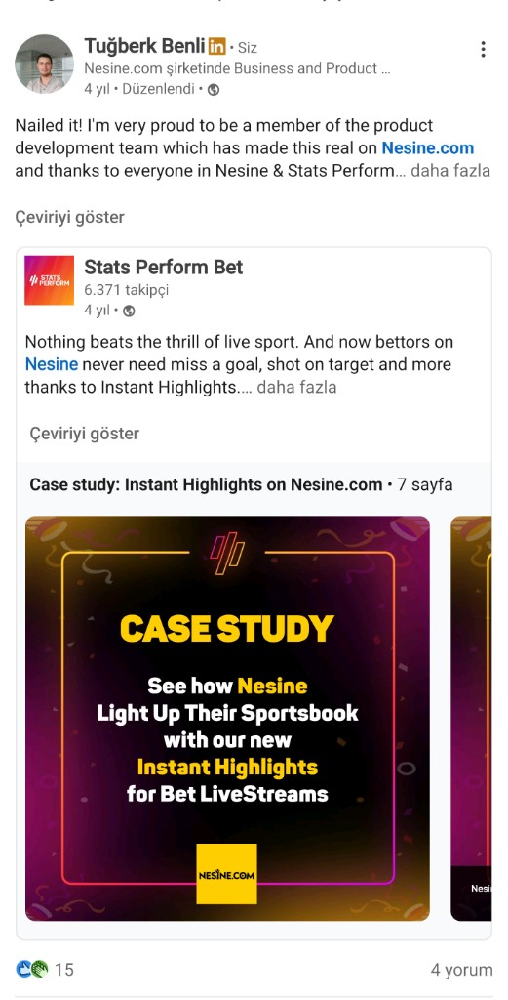

Global first · B2B partner
Instant Highlights
During routine market research, we saw a leading sports data provider building highlight distribution from its live football coverage, a product that evolves year to year. The concept was original; the commercial upside was clear.
We offered to help develop and go to market, including support for selling into sports betting. The prize: be the first betting operator to put highlights directly in front of customers. We stress-tested the data, flagged bugs to our B2B partner, and shaped how to fix them. Under the exclusive agreement, we launched Highlights — not only first in Türkiye, but first globally in betting.